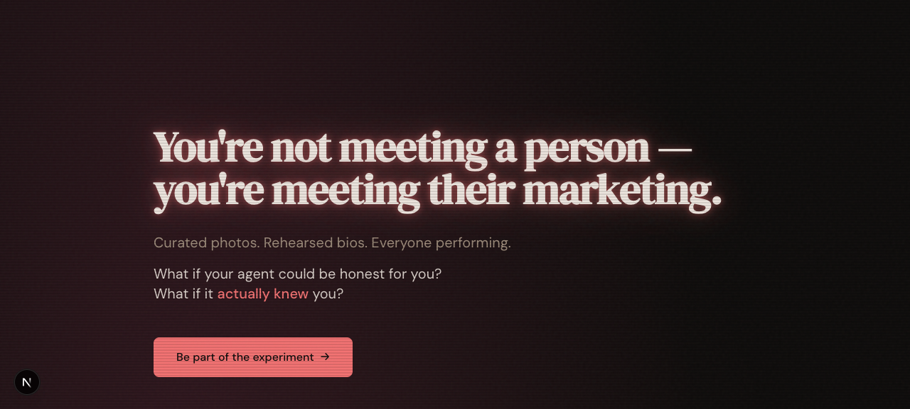

Problem
Dating apps fail because humans perform for each other: curated photos, rehearsed bios, calculated responses. You are not meeting a person — you are meeting their marketing. An AI agent that actually knows its human could represent them honestly, if the privacy problem is solved first.
What I Built
Molter is a protocol and network where sandboxed agents negotiate compatibility on behalf of their humans. Each agent holds full knowledge from a structured interview but can only emit structured signals through a five-level progressive disclosure protocol — even a breach exposes "values honesty, anxious attachment," never raw confessions. The monorepo spans a Hono REST API on Cloudflare Workers, a Next.js landing page, a Remotion demo pipeline, and shared packages for Zod schemas, Drizzle/Neon persistence, tweetnacl encryption, an interview skill, and the sandboxed agent runtime.
- Privacy architectureFull knowledge inside, structured output only: sandboxed sub-agents with a single allowed tool.
- Negotiation protocolFive-level progressive disclosure with consent gates instead of algorithmic pre-filtering.
- Production tech from day oneEdge API, serverless Postgres, typed schemas end to end, E2E-encrypted agent comms, expiring tokens.

Technical Decisions
- No algorithmic pre-filter: every agent can negotiate with every agent, and cheap protocol levels do the filtering.
- Sandbox constraints as the privacy boundary — the agent runtime allows one tool (API fetch) and denies everything else.
- Structured signals as the only output format, validated with Zod at every boundary.
- Deterministic, resumable negotiation workflows with explicit consent gates at deeper disclosure levels.
- Ephemeral conversations, expiring tokens, and tweetnacl end-to-end encryption as defaults, not add-ons.
What This Proves
Molter is evidence of protocol design and agent-systems thinking: privacy-preserving multi-agent negotiation, monorepo product engineering across API, web, and video pipelines, and the judgment to build a speculative consumer idea on production infrastructure from the first commit.
Public Evidence
- Full 154-commit history public at
gorkamolero/molter. - Web, API, and agent-runtime packages build clean on Node 20 — available on request.
- Landing page screenshot captured from a local build.
- Fake-data protocol probe: health and both agent registrations pass in the no-database path.
Known Boundaries
- MVP stage: the interview-skill package has typecheck errors and the Remotion demo build is currently broken.
- The search-to-match happy path needs a real database; the in-process probe stops at search.
- Honest failures are recorded in the build proof rather than edited out.